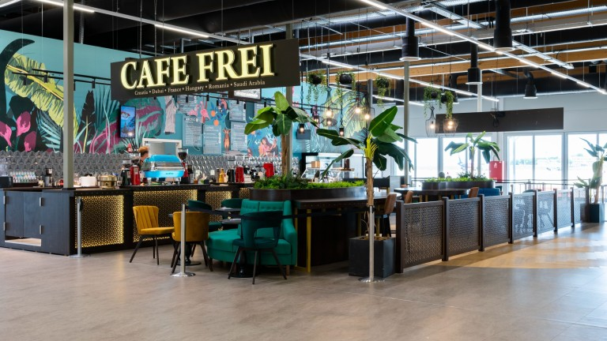
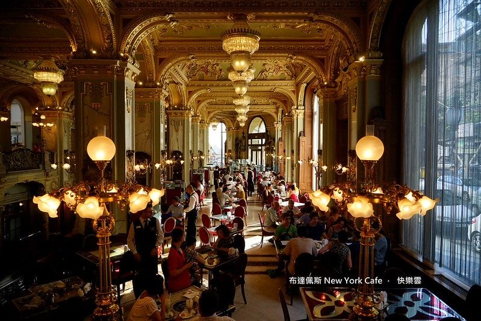

Kávézók
A kávézók a mindennapi élet kedvelt találkozóhelyei, ahol az emberek kikapcsolódhatnak, beszélgethetnek vagy pihenhetnek. Számos finom ital közül választhatunk, például cappuccino, latte, espresso vagy jegeskávé. A legtöbb kávézó süteményeket és különféle édességeket is kínál. Hangulatos berendezésük és kellemes légkörük miatt ideális helyszínek baráti találkozókhoz, tanuláshoz vagy akár munkához is. A kávézók tehát nemcsak a kávézásról, hanem a közös élményekről és a kikapcsolódásról is szólnak.

Cafe Frei
A Café Frei egy magyar kávézólánc, amely különleges, a világ különböző országaiból inspirálódó kávékat kínál. Választékában megtalálhatók a klasszikus kávék mellett az egyedi ízesítésű italok is. Hangulatos környezete ideális helyszín baráti beszélgetésekhez és kikapcsolódáshoz.

New York Cafe
A New York Kávéház Budapest egyik leghíresebb és legszebb kávéháza, amely elegáns, különleges belsőépítészetéről ismert. Gyönyörű csillárok, márványoszlopok és díszes mennyezet teszik különlegessé. Kínálatában kávékülönlegességek, sütemények és finom desszertek is megtalálhatók. Népszerű turistalátványosság és különleges helyszín a kikapcsolódásra.